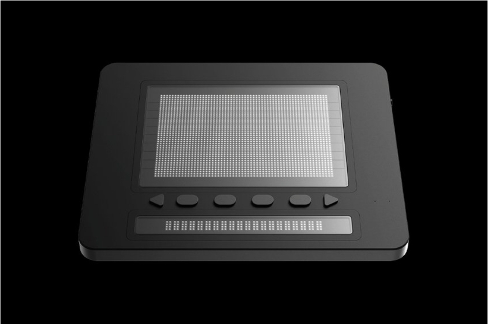
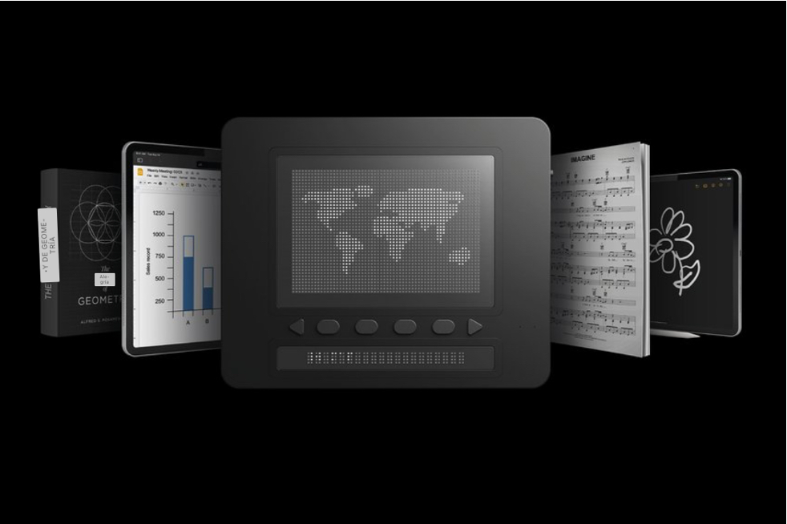
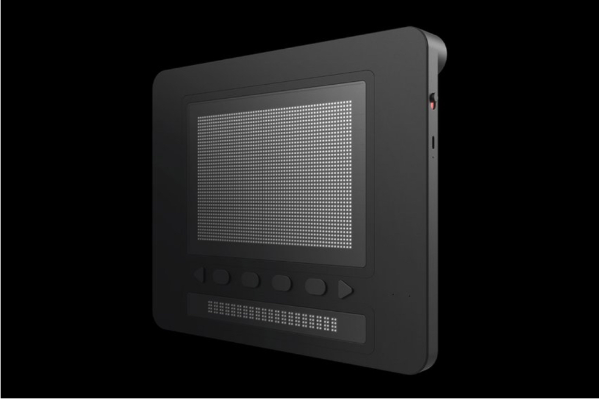

Galería de imagenes
- 
- 
- 

La primera pantalla gráfica táctil inteligente para aquellas personas que sufren de discapacidades visuales.
InformaciónLos sentidos de el ser humano son características que nos hacen la vida más sencilla en muchos aspectos. El poder ver obstáculos mientras andamos, poder escribir con el teléfono, poder ir a una quedada con amigos… En la población, hay muchas personas que sufren de discapacidades que les imposibilitan la realización de tareas tan sencillas como las mencionadas anteriormente (en mayor o menor grado, dependiendo de la deficiencia).Hoy en día vivimos en una sociedad sumida en la tecnología, y es por ello que tenemos que ser capaces de ofrecer un ritmo de vida accesible a todo el mundo, independientemente de si sufre o no algún tipo de discapacidad.
Las personas que tienen deficiencias en la vista, se ven limitadas de realizar muchas tareas en el día a día como el ver obstáculos o personas, leer texto que no tienen una tipografía adecuada para ellos, en ocasiones pueden tener dificultades en la movilidad... entre muchas otras.
Hay muchas enfermedades que pueden provocar la ceguera como las cataratas (comunes en personas mayores de 40 años), la retinopatía diabética (si una persona tiene diabetes en un grado desorbitado, puede originar la ceguera debido a esta enfermedad) o un glaucoma (aumento de la presión en el globo ocular, que puede llevar a una disminución importante de la visión)… Aunque nosotros no tengamos discapacidades, no debemos olvidarnos de que hay gente que tiene que lidiar con estas en su día a día, y por tanto, en medida de lo posible, debemos contribuir en que sus vidas puedan desarrollarse de la misma forma que las de las personas que no sufren deficiencias.
Conforme pasan los años, la sociedad intenta ser más accesible en todos los aspectos, y con la ayuda de la tecnología y la IA, es algo muy fácil de implantar y conseguir.
Un 15 por ciento de la población sufre algún tipo de discapacidad.
Es la cifra de personas que sufren de algún tipo de discapacidad visual.
Es el total de personas que son ciegas.
De las personas discapacitadas visualmente tienen riesgo de sufrir una depresión leve o moderada.
Estas cifras son un claro ejemplo de porqué es necesario e importante crear contenidos accesibles.
Los libros táctiles son caros y en ocasiones poco práticos, al igual que las descripciones de audio en muchas situaciones son incompletas. Por ello, este año, en el convento CES 2023, presentaron un proyecto innovador para personas con discapacidad visual, una tablet capaz de convertir cualquier entrada en el dispositivo conectado, en un gráfico táctil al instante. La empresa, con sede en Corea, se formó cuando los cofundadores Ki Kwang Sung y Eric Ju Yoon Kim se sintieron hartos de la falta de opciones para aprender y leer a pesar de tantos otros avances en informática e interfaces.
¿Cómo se creó?
A los creadores del dispositivo se les ocurrió la idea basándose en el funcionamiento de los altavoces. Los diseñadores decidieron adaptar un actuar electromagnético para que fuese capaz de mover un pasador de arriba hasta abajo, usando una bola magnética que se puede bloquear en ambas posiciones (arriba o abajo). Consiguen que esta operación se realice en un tiempo 10 veces menor a los actuadores braille que hay ahora mismo en el mercado. Las dos pantallas (en la que se representa el contenido y la que cuenta con una línea para texto braille) tienen una pantlla protectora que sirve para que esos pines no se queden pegados.
¿Cómo funciona?
Este diseño permite acceder a contenido visual desde cualquier fuente. Lo que hace es ofrecer una entrada visual desde la cual luego detecta el contenido. Una vez lo ha detectado, realiza una representación semántica que permite un mapeo táctil. Se apoya en herramientas de IA para poder analizar y segmentar imágenes y producir gráficos táctiles que les sirvan a las personas con discapacidad visual para entender el contenido. Cuenta con 320 celdas de 8 pines, de las cuales 300 ocupan toda la pantalla, y las otras 20 conforman una línea braille para texto. Analiza imágines y gráficos (entre otro tipo de informacion) en tiempo real desde archivo o desde la cámara de un teléfono, contando además con una autonomía de 11 horas.
Se puede interactuar con los gráficos para acceder al más mínimo detalle del contenido. Cuenta también controles simples e intuitivos al igual que un panel de texto a braille.
Dotpad permite que personas con discapacidad visual sean capaces de desarrollar su creatividad y no se vean limitados por las deficiencias que en su día les impedían tener un ritmo de vida “normal”.
DotPad ofrece la posibilidad de acceder a mapas, diagramas, gráficos o imágenes, permitiéndoles un acceso al contenido de internet mucho más sencillo y accesible. En un dispositivo, tienen todo a su alcance.
Lo realmente proporciona es una mayor accesibilidad en las aplicaciones. Esto conlleva la aparición de nuevas oportunidades de carrera y hace que el trabajo sea mas inclusivo para los discapacitados.
El uso de esta tecnología en la educación puede mejorar la capacidad de los colegios e instituciones para que el contenido sea más accesible para los usuarios que tengan algún tipo de discapacidad visual. Dot Pad ayuda a los lectores de braille a interactuar de forma individual con el mundo que los rodea y dejar de ser tan dependientes. Utiliza herramientas de inteligencia artificial para que los usuarios puedan disfrutar de una mayor independencia y productividad en su día a día.

"El Dot Pad es una innovación que proporciona inclusión social y puede revolucionar los productos no sólo para ciegos, sino también para personas con otras discapacidades".
"Estamos muy entusiasmados de que la tecnología táctil de Dot ahora esté optimizada para VoiceOver y que esto amplíe la accesibilidad digital. Más allá del habla o del braille literario, estos usuarios ahora pueden sentir y mejorar su comprensión de las imágenes".
"En el siglo XXI, no tenía sentido que las personas con discapacidad visual no pudieran acceder a información gráfica de forma digital".